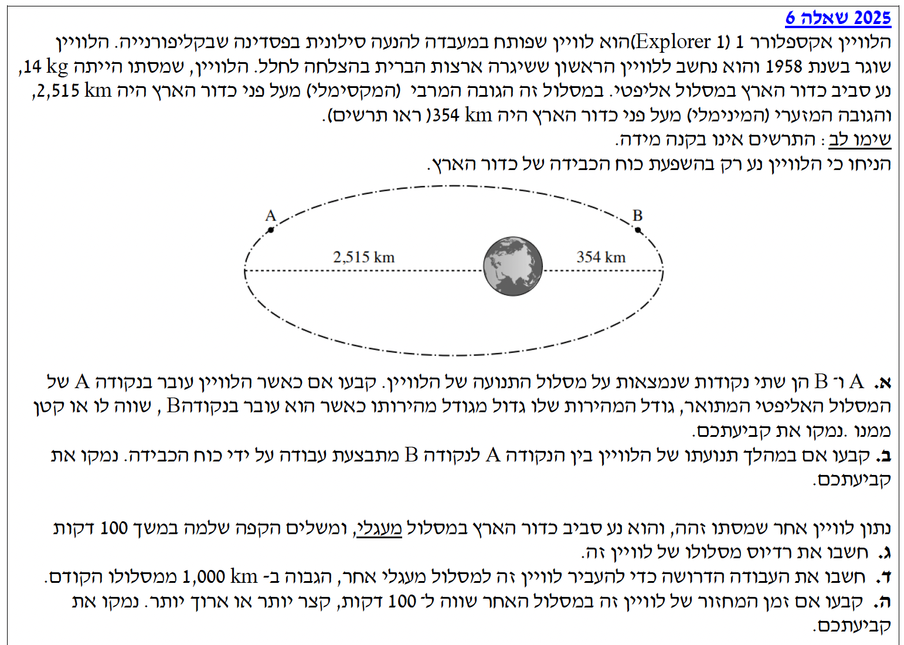

פתרון מוסבר: בגרות בפיזיקה 2025, שאלה 6 (כבידה)
פיזיקה 5 יח"ל | שאלון 2025 | שאלה 6
פתרון מודרך ופדגוגי, צעד-אחר-צעד, לניתוח תנועת לוויינים
עודכן:
--- --:--:--
מבט כללי על השאלה
שלום תלמידים יקרים! הגענו לשאלת הכבידה והאסטרופיזיקה. בשאלה זו ננתח תנועת לוויינים במסלולים אליפטיים ומעגליים סביב כדור הארץ, תוך שימוש בחוקי ניוטון, שימור אנרגיה ועבודה.
בואו נעבור על זה שלב אחר שלב, בצורה מסודרת וברורה.

[תמונת השאלה המקורית]
לא נמצאה תמונה בשם question-image.png באותה תיקייה.
מה נתון:
- הלוויין נע במסלול אליפטי סביב כדור הארץ.
- מסת הלוויין: \(m = 14 \text{ kg}\).
- נקודות A ו-B הן שתי נקודות שונות על המסלול האליפטי.
- מהתרשים ניתן לראות בבירור כי המרחק ממרכז כדור הארץ לנקודה A גדול מהמרחק לנקודה B (\(r_A > r_B\)).
- פועל רק כוח הכבידה של כדור הארץ.
מה מחפשים:
לקבוע האם גודל המהירות של הלוויין בנקודה A גדול, קטן או שווה לגודל מהירותו בנקודה B, ולנמק.
נוסחאות ועקרונות בשימוש:
\(E_k = \frac{1}{2}mv^2\)
\(U_G = -\frac{GMm}{r}\)
עיקרון: חוק שימור אנרגיה מכנית (כוח הכבידה הוא כוח משמר)
פתרון צעד-אחר-צעד:
נבחן את האנרגיה הפוטנציאלית הכובדית המוגדרת על ידי הנוסחה \(U_G = -\frac{GMm}{r}\).
מכיוון שיש סימן מינוס בנוסחה, ככל שהמרחק \(r\) גדול יותר, השבר \(\frac{GMm}{r}\) קטן יותר בערכו המוחלט, ולכן הערך של \(U_G\) (שהוא שלילי) הופך להיות פחות שלילי, כלומר גדול יותר מתמטית.
מרחק הלוויין בנקודה A ממרכז כדור הארץ גדול ממרחקו בנקודה B (\(r_A > r_B\)). לכן, האנרגיה הפוטנציאלית בנקודה A גדולה מזו שבנקודה B (\(U_{G,A} > U_{G,B}\)).
על פי חוק שימור האנרגיה המכנית (\(E_k + U_G = \text{const}\)), האנרגיה הכוללת נשמרת. מכיוון שהאנרגיה הפוטנציאלית ב-A גדולה יותר, האנרגיה הקינטית ב-A חייבת להיות קטנה יותר כדי שהסכום יישאר קבוע (\(E_{k,A} < E_{k,B}\)). אנרגיה קינטית תלויה ישירות בגודל המהירות בריבוע, ומכאן שגודל המהירות ב-A קטן מזה שב-B.
תשובה סופית: גודל המהירות בנקודה A קטן מגודל המהירות בנקודה B.
הערת מורה:
שימו לב למלכודת נפוצה! האנרגיה הפוטנציאלית \(U_G\) היא גודל שלילי. כאשר הרדיוס \(r\) גדל, הערך עולה מתמטית (מתקרב לאפס). לכן בנקודה רחוקה יותר (כמו A) האנרגיה הפוטנציאלית גדולה יותר (ופחות שלילית), ובהתאמה האנרגיה הקינטית קטנה יותר!
מה נתון:
הלוויין נע מנקודה A (הנקודה המרוחקת, מהירות נמוכה) לנקודה B (הנקודה הקרובה, מהירות גבוהה). כוח הכבידה הוא הכוח היחיד שפועל עליו.
מה מחפשים:
לקבוע האם עבודת כוח הכבידה במעבר מ-A ל-B היא חיובית, שלילית או אפס, ולנמק.
נוסחאות ועקרונות בשימוש:
\(W_{\text{תללוכ}} = \Delta E_k\)
עיקרון: משפט עבודה-אנרגיה
פתרון צעד-אחר-צעד:
הוכחנו בסעיף א' שגודל המהירות בנקודה B גדול מגודל המהירות בנקודה A (\(v_B > v_A\)).
לכן, האנרגיה הקינטית של הלוויין גדלה במהלך תנועתו מ-A ל-B.
\[ \Delta E_k = E_{k,B} - E_{k,A} > 0 \]
לפי משפט עבודה ואנרגיה, עבודת שקול הכוחות שווה לשינוי באנרגיה הקינטית. מאחר שכוח הכבידה הוא הכוח היחיד הפועל על הלוויין (ולכן הוא הכוח הכולל):
\[ W_G = \Delta E_k > 0 \]
מכאן שהעבודה המתבצעת על ידי כוח הכבידה היא חיובית.
תשובה סופית: העבודה שמבצע כוח הכבידה מ-A ל-B היא חיובית.
הסבר אינטואיטיבי:
אפשר לחשוב על זה גם דרך הגדרת העבודה \(W = F \cdot \Delta x \cdot \cos(\alpha)\). כאשר הלוויין נע מ-A ל-B, הוא מתקרב לכדור הארץ. כוח הכבידה פועל לכיוון כדור הארץ, וגם וקטור ההעתק מכיל רכיב משמעותי לכיוון כדור הארץ. כלומר, הזווית בין כוח הכבידה לכיוון התנועה (בחלק זה של המסלול) היא זווית חדה (\(\alpha < 90^\circ\)), ולכן העבודה חיובית. כוח הכבידה "עוזר" ללוויין להאיץ (גודל המהירות גדל). ממש כמו חפץ שנופל!
מה נתון:
- לוויין שני בעל מסה זהה \(m = 14 \text{ kg}\) במסלול מעגלי.
- זמן המחזור: \(T = 100 \text{ min} = 6000 \text{ s}\).
- קבוע הגרביטציה: \(G = 6.67 \cdot 10^{-11} \frac{\text{N}\cdot\text{m}^2}{\text{kg}^2}\).
- מסת כדור הארץ: \(M_E = 5.974 \cdot 10^{24} \text{ kg}\).
מה מחפשים:
את רדיוס מסלולו של הלוויין \(r\) (המרחק ממרכז כדור הארץ).
נוסחאות ועקרונות בשימוש:
\(\Sigma\vec{F} = m\vec{a}\)
\(F = G\frac{m_1 m_2}{r^2}\)
\(a_R = \omega^2 r\)
\(\omega = \frac{2\pi}{T}\)
חישוב:
נרשום את משוואת הכוחות עבור הלוויין בציר הרדיאלי הפונה למרכז כדור הארץ:
\[ \Sigma F_R = m a_R \]
\[ G\frac{M_E m}{r^2} = m \cdot (\omega^2 r) \]
מסת הלוויין \(m\) מצטמצמת. נציב את הביטוי למהירות הזוויתית \(\omega = \frac{2\pi}{T}\):
\[ G\frac{M_E}{r^2} = \left(\frac{2\pi}{T}\right)^2 r \]
\[ G\frac{M_E}{r^2} = \frac{4\pi^2}{T^2} r \]
נבודד את \(r^3\):
\[ r^3 = \frac{G \cdot M_E \cdot T^2}{4\pi^2} \]
כעת נציב את הערכים המספריים:
\[ r^3 = \frac{6.67 \cdot 10^{-11} \cdot 5.974 \cdot 10^{24} \cdot (6000)^2}{4 \cdot \pi^2} \]
\[ r^3 = \frac{3.9846 \cdot 10^{14} \cdot 3.6 \cdot 10^7}{39.478} \]
\[ r^3 = \frac{1.434 \cdot 10^{22}}{39.478} \approx 3.633 \cdot 10^{20} \]
נוציא שורש שלישי:
\[ r = \sqrt[3]{3.633 \cdot 10^{20}} \approx 7.135 \cdot 10^6 \text{ m} \]
תשובה סופית: רדיוס המסלול המעגלי של הלוויין הוא \(r = 7.135 \cdot 10^6 \text{ m}\).
טיפ מורה - דרך חלופית (ואלגנטית!) לפתרון:
ניתן לפתור סעיף זה גם באמצעות החוק השלישי של קפלר! מכיוון שגם הלוויין וגם הירח מקיפים את אותו גוף (כדור הארץ), היחס \(\frac{r^3}{T^2}\) קבוע עבור שניהם.
מתוך טבלת הנתונים בדף הנוסחאות (עמ' 8) לוקחים את נתוני הירח: \(T_m = 27.3 \text{ days}\) ו-\(r_m = 3.84 \cdot 10^8 \text{ m}\).
ממירים את הזמנים לאותן יחידות (למשל, דקות או שניות), מציבים במשוואה \(\left( \frac{\overline{r}_s}{\overline{r}_m} \right)^3 = \left( \frac{T_s}{T_m} \right)^2\) ומקבלים תוצאה כמעט זהה (\(\approx 7.15 \cdot 10^6 \text{ m}\)). ההבדל הקטן נובע מנתונים מעוגלים בדף הנוסחאות. משרד החינוך מקבל את שתי הדרכים!
ועוד דגש חשוב: שימו לב שהשאלה ביקשה את "רדיוס מסלולו" ולא "גובהו מעל פני כדור הארץ". הרדיוס נמדד תמיד ממרכז כוכב הלכת, ולכן אין צורך לחסר את רדיוס כדור הארץ מהתוצאה.
מה נתון:
- מסת הלוויין נותרה \(m = 14 \text{ kg}\).
- הרדיוס ההתחלתי שחישבנו: \(r_1 = 7.135 \cdot 10^6 \text{ m}\).
- הלוויין מועבר למסלול הגבוה ב-1,000 ק"מ. נמיר יחידות: \(\Delta h = 10^6 \text{ m}\).
- הרדיוס החדש יהיה: \(r_2 = r_1 + \Delta h = 8.135 \cdot 10^6 \text{ m}\).
מה מחפשים:
את העבודה הדרושה להעברת הלוויין ממסלול \(r_1\) למסלול \(r_2\) (העבודה שיבצע גורם חיצוני כגון מנועי הלוויין).
נוסחאות ועקרונות בשימוש:
\(W_{\text{םירמשמ אל}} = \Delta E\)
\(E = -\frac{GMm}{2r}\) (אנרגייה של לוויין במסלול מעגלי - כוללת)
* שימו לב: הנוסחה לעיל מופיעה בדף הנוסחאות תחת הכותרת המדויקת "אנרגייה של לוויין במסלול מעגלי (פוטנציאלית, קינטית וכוללת)" - והיא מייצגת את האנרגיה הכוללת הייחודית למסלול מעגלי בלבד.
חישוב:
נחשב תחילה את המכפלה \(GM_E m\) שתשמש אותנו בשני החישובים:
\[ GM_E m = 6.67 \cdot 10^{-11} \cdot 5.974 \cdot 10^{24} \cdot 14 \approx 5.578 \cdot 10^{15} \text{ J}\cdot\text{m} \]
האנרגיה הכוללת במסלול ההתחלתי \(r_1\):
\[ E_1 = -\frac{GM_E m}{2r_1} = -\frac{5.578 \cdot 10^{15}}{2 \cdot 7.135 \cdot 10^6} = -3.909 \cdot 10^8 \text{ J} \]
האנרגיה הכוללת במסלול החדש \(r_2\):
\[ E_2 = -\frac{GM_E m}{2r_2} = -\frac{5.578 \cdot 10^{15}}{2 \cdot 8.135 \cdot 10^6} = -3.428 \cdot 10^8 \text{ J} \]
העבודה הדרושה היא השינוי באנרגיה הכוללת:
\[ W = E_2 - E_1 \]
\[ W = -3.428 \cdot 10^8 - (-3.909 \cdot 10^8) \]
\[ W = 0.481 \cdot 10^8 \text{ J} = 4.81 \cdot 10^7 \text{ J} \]
תשובה סופית: העבודה הדרושה להעברת הלוויין היא \(W \approx 4.81 \cdot 10^7 \text{ J}\).
הערת מורה:
שגיאה נפוצה של תלמידים היא לחשב רק את השינוי באנרגיה הפוטנציאלית (\(\Delta U_G\)). אולם, כשאנו מעבירים לוויין ממסלול מעגלי אחד לשני, גם מהירותו משתנה (במסלול גבוה יותר, מהירותו קטנה יותר). שימוש בנוסחת האנרגיה הכוללת חוסך מאיתנו את הצורך לחשב בנפרד את האנרגיה הקינטית לפני ואחרי!
מה נתון:
- הלוויין הועבר ממסלול ברדיוס \(r_1\) למסלול בעל רדיוס גדול יותר (\(r_2 > r_1\)).
- זמן המחזור במסלול הראשון (הנמוך) הוא \(T_1 = 100 \text{ min}\).
- הלוויין סובב סביב אותו גוף מרכזי (כדור הארץ) בשני המקרים.
מה מחפשים:
לקבוע האם זמן המחזור החדש (\(T_2\)) יהיה שווה ל-100 דקות, קצר יותר או ארוך יותר, ולנמק.
נוסחאות ועקרונות בשימוש:
\(\left( \frac{\overline{r}_1}{\overline{r}_2} \right)^3 = \left( \frac{T_1}{T_2} \right)^2\)
(החוק השלישי של קפלר)
פתרון צעד-אחר-צעד:
מכיוון שהלוויין מקיף את אותו גוף מרכזי (כדור הארץ) בשני המסלולים, אנו יכולים להשתמש בחוק השלישי של קפלר (בדיוק כפי שהוא מופיע בדף הנוסחאות). חוק זה קובע שהיחס בין מעוקב רדיוס המסלול לריבוע זמן המחזור נשאר קבוע עבור כל המסלולים סביב אותו כוכב.
\[ \left( \frac{\overline{r}_2}{\overline{r}_1} \right)^3 = \left( \frac{T_2}{T_1} \right)^2 \]
מתוך הקשר המתמטי הזה, אנו יכולים ללמוד בבירור על היחס הישר (פרופורציה עולה) שבין הרדיוס לזמן המחזור.
נתון לנו שהרדיוס החדש גדול מהרדיוס הישן (\(r_2 > r_1\)). כלומר, היחס בין הרדיוסים מקיים \(\frac{\overline{r}_2}{\overline{r}_1} > 1\).
אם צד שמאל של המשוואה (יחס הרדיוסים בשלישית) גדול מ-1, הרי שבהכרח גם צד ימין (יחס זמני המחזור בריבוע) חייב להיות גדול מ-1 כדי לשמור על השוויון (\(\frac{T_2}{T_1} > 1\)).
המשמעות היא שזמן המחזור במסלול החדש והרחב יותר (\(T_2\)) חייב להיות גדול מזמן המחזור ההתחלתי (\(T_1\)).
תשובה סופית: זמן המחזור במסלול האחר יהיה ארוך יותר מ-100 דקות.
הסבר אינטואיטיבי:
אפשר להבין זאת מתוך שני גורמים המשתלבים יחד: ראשית, במסלול רחוק יותר כוח הכבידה חלש יותר, מה שאומר שהלוויין נדרש למהירות נמוכה יותר כדי להישאר במסלול מעגלי. שנית, המרחק שהוא צריך לעבור (היקף המעגל) גדול בהרבה. גם לנסוע לאט יותר וגם לעבור מרחק ארוך יותר? בוודאי שייקח לו יותר זמן לסיים הקפה!